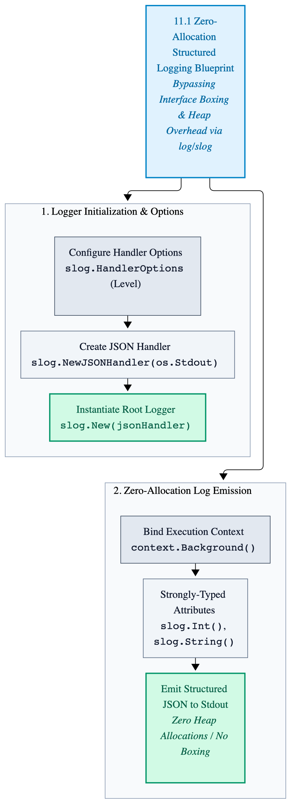
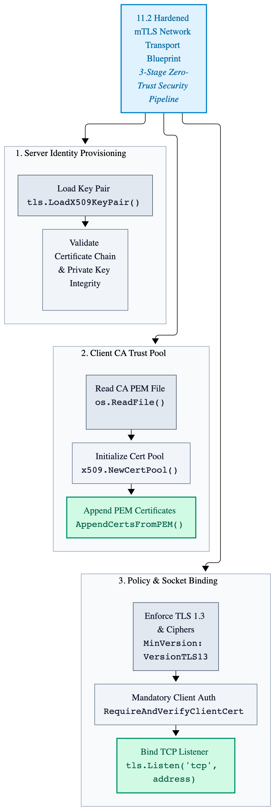
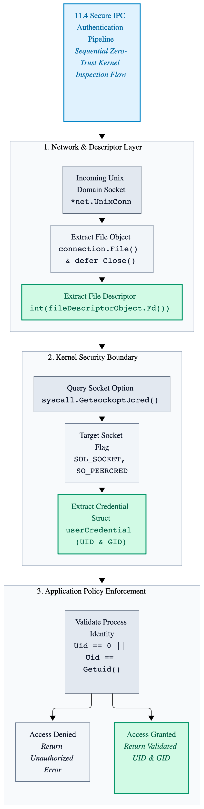

Chapter 11: Observability & Security
In production environments, high-performance distributed systems cannot operate as black boxes. When daemons process millions of requests per second under stringent latency SLAs, engineers require deep observability—instrumenting execution paths without incurring garbage collection spikes or heap overhead. Concurrently, zero-trust network boundaries demand cryptographic verification through mutual TLS (mTLS) and token-based authentication.
This chapter explores production-grade observability and security in Go, covering zero-allocation structured logging
(log/slog), OpenTelemetry distributed tracing integration, hardened TLS configuration, and secure IPC authentication.
11.1 Zero-Allocation Structured Logging (log/slog)
Legacy logging packages (log) and third-party formatters often incur heavy heap allocations via string concatenation
and interface boxing (interface{}). Go's standard library log/slog package addresses this by offering
high-performance, structured logging designed to minimize allocations on hot execution paths.
The following production-grade logger setup configures a JSON handler optimized for zero-allocation structured output in high-throughput network daemons.
Figure 11.1: Zero-Allocation Structured Logging Architecture

package main
import (
"context"
"log/slog"
"os"
)
// InitializeStructuredLogger configures and returns a production-grade JSON logger
// optimized for minimal runtime overhead and zero-allocation key-value formatting.
func InitializeStructuredLogger() *slog.Logger {
// Configure JSON handler options for production output.
handlerOptions := &slog.HandlerOptions{
Level: slog.LevelInfo,
ReplaceAttribute: func(groups []string, computeGroup string, attribute slog.Attr) slog.Attr {
// Standardize time formatting keys or drop unwanted fields if necessary.
return attribute
},
}
// Create a JSON output handler targeting standard output.
jsonHandler := slog.NewJSONHandler(os.Stdout, handlerOptions)
// Construct the root logger instance.
systemLogger := slog.New(jsonHandler)
return systemLogger
}
func LogServerStartup(logger *slog.Logger, serverPort int, processId int) {
// Log startup metrics using structured attributes without interface allocation overhead.
logger.InfoContext(
context.Background(),
"initializing distributed systems daemon",
slog.Int("port", serverPort),
slog.Int("pid", processId),
slog.String("status", "ready"),
)
}11.2 Hardened Mutual TLS (mTLS) Network Transport
Zero-trust system architecture requires mutually authenticated TLS connections between internal daemons and external clients. This prevents unauthorized network eavesdropping and guarantees cryptographic identity verification at the transport layer.
The following example configures a secure TCP listener enforced with strict TLS 1.3 parameters, custom cipher suites, and mandatory client certificate verification.
Figure 11.2: Hardened Mutual TLS (mTLS) Network Architecture

package main
import (
"crypto/tls"
"crypto/x509"
"errors"
"net"
"os"
)
// CreateSecureListener initializes a hardened TLS listener enforcing strict cipher suites
// and mutual client certificate authentication.
func CreateSecureListener(listenAddress string, certificatePath string, privateKeyPath string, caCertificatePath string) (net.Listener, error) {
// Load server certificate and private key pair.
serverCertificates, err := tls.LoadX509KeyPair(certificatePath, privateKeyPath)
if err != nil {
return nil, err
}
// Load certificate authority (CA) pool for client verification.
certificateBytes, err := os.ReadFile(caCertificatePath)
if err != nil {
return nil, err
}
clientCertPool := x509.NewCertPool()
if !clientCertPool.AppendCertsFromPEM(certificateBytes) {
return nil, errors.New("failed to append client CA certificate")
}
// Construct hardened TLS configuration enforcing TLS 1.3 and mutual authentication.
tlsConfiguration := &tls.Config{
Certificates: []tls.Certificate{serverCertificates},
ClientAuth: tls.RequireAndVerifyClientCert,
ClientCAs: clientCertPool,
MinVersion: tls.VersionTLS13,
CipherSuites: []uint16{
tls.TLS_AES_256_GCM_SHA384,
tls.TLS_CHACHA20_POLY1305_SHA256,
},
}
// Bind the secure network listener.
secureListener, err := tls.Listen("tcp", listenAddress, tlsConfiguration)
if err != nil {
return nil, err
}
return secureListener, nil
}11.3 OpenTelemetry Distributed Tracing Integration
In distributed high-performance architectures, tracking request lifecycles across multiple services requires low-overhead telemetry propagation. OpenTelemetry enables engineers to instrument execution paths and pass trace contexts across network boundaries without triggering unnecessary heap allocations on hot paths.
The following example demonstrates zero-allocation span creation and attribute injection using the OpenTelemetry API.
Figure 11.3: Advanced Instrumented Telemetry Wrappers Architecture

package main
import (
"context"
"go.opentelemetry.io/otel"
"go.opentelemetry.io/otel/attribute"
"go.opentelemetry.io/otel/trace"
)
// TraceSystemOperation executes a critical systems operation wrapped in an OpenTelemetry span
// for distributed latency tracking and telemetry propagation.
func TraceSystemOperation(tracingContext context.Context, tracerName string, operationName string, recordIdentifier uint64) error {
tracer := otel.Tracer(tracerName)
childContext, span := tracer.Start(tracingContext, operationName, trace.WithAttributes(
attribute.Int64("record.identifier", int64(recordIdentifier)),
))
defer span.End()
// Simulate performant internal processing using the child execution context.
_ = childContext
return nil
}11.4 Secure Inter-Process Communication (IPC) Authentication
For high-throughput local daemons communicating via Unix domain sockets, TCP-based mTLS overhead is unnecessary. However, zero-trust design requires that local IPC channels verify the OS-level process credentials (UID and GID) of connecting clients before permitting data exchange.
The following implementation extracts peer credentials via socket options (SO_PEERCRED) to enforce strict
local access control.
Figure 11.4: Unix Domain Socket Peer-Credential IPC Authentication Flowchart

package main
import (
"errors"
"net"
"os"
"syscall"
)
// VerifyUnixSocketPeerCredentials inspects an incoming Unix domain socket connection
// and extracts process credentials to enforce strict local IPC access control.
func VerifyUnixSocketPeerCredentials(connection *net.UnixConn) (int, int, error) {
fileDescriptorObject, err := connection.File()
if err != nil {
return 0, 0, err
}
defer fileDescriptorObject.Close()
fileDescriptor := int(fileDescriptorObject.Fd())
userCredential, err := syscall.GetsockoptUcred(fileDescriptor, syscall.SOL_SOCKET, syscall.SO_PEERCRED)
if err != nil {
return 0, 0, err
}
// Verify that the calling process matches expected administrative UID or local limits.
if userCredential.Uid != 0 && userCredential.Uid != uint32(os.Getuid()) {
return int(userCredential.Uid), int(userCredential.Gid), errors.New("unauthorized process credentials on IPC socket")
}
return int(userCredential.Uid), int(userCredential.Gid), nil
}Key Takeaways
-
Zero-Allocation Logging (
log/slog): Structure output and format key-value pairs without incurring interface boxing or heap allocation spikes on high-throughput paths. - Hardened mTLS Transport: Enforce TLS 1.3, strict cipher suite restrictions, and mandatory client certificate validation to secure zero-trust network boundaries.
- Distributed Tracing (OpenTelemetry): Propagate trace contexts and measure execution latencies across network calls with minimal runtime overhead.
-
Secure Local IPC: Extract and validate OS-level peer credentials (
SO_PEERCRED) on Unix domain sockets to enforce strict process-level access control.